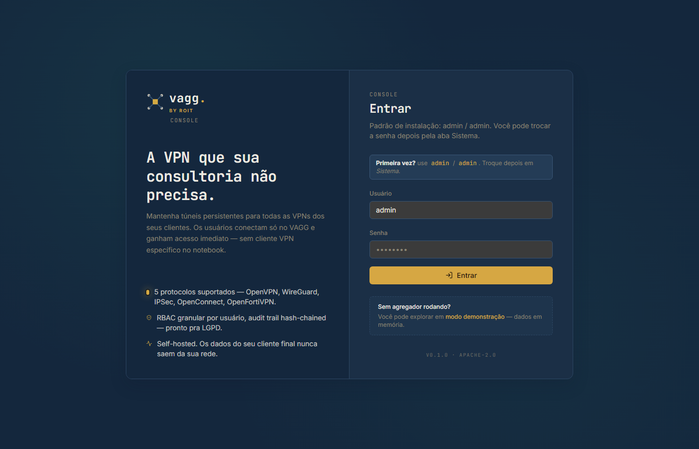
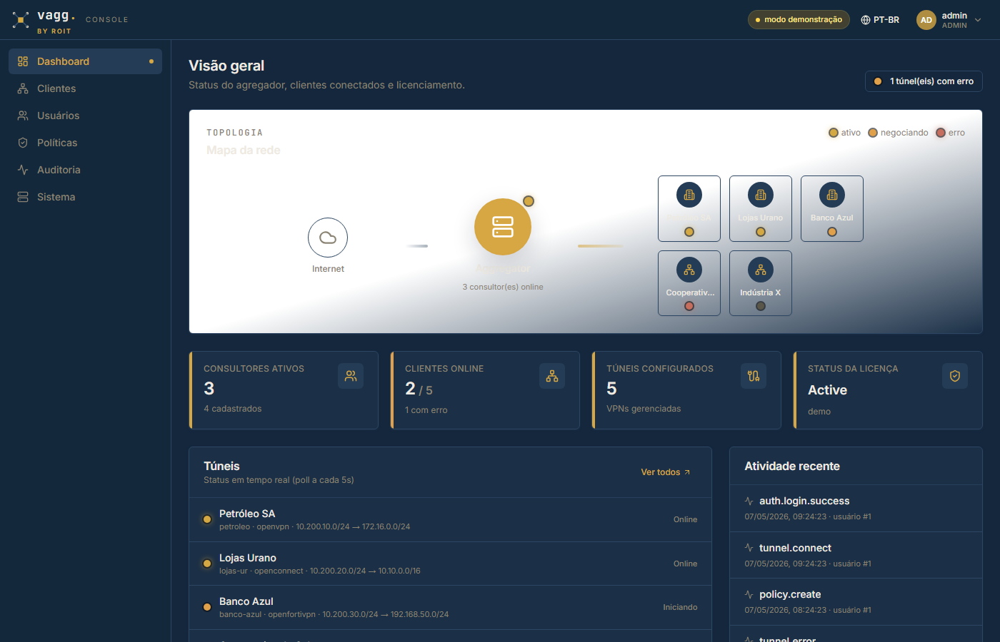

O console de agregação de VPNs herda a identidade visual da ROIT — navy profundo, ouro como acento único, geometria limpa, dark-first.
VAGG é um produto interno da ROIT. A interface antiga usava uma paleta independente (verde + grafite) que não refletia essa origem.
Pra clientes finais, consultores e demos comerciais, a UI precisa transmitir "isso é ROIT" sem precisar explicar.
O rebrand foi feito sem alteração funcional — só camadas de tema, logo e tokens visuais.
→Cobrand: VAGG continua sendo o nome do produto, ROIT é a publisher
→Acento único: ouro substitui verde como cor primary
→Background navy substitui grafite neutro
→Zero impacto em código de negócio
Background, sidebars, headers e cards. Serve de canvas neutro pro acento dourado se destacar.
Único acento. Botões primários, links ativos, LEDs, indicadores de estado positivo, badge "BY ROIT".
Texto principal em #F1ECE1 — leve viés sand pra harmonizar com gold sem virar branco puro.
Mark mantém a geometria "agregador de rede" do VAGG (4 nós convergindo num core central) — recolorida com a paleta ROIT.
Wordmark "vagg." conserva sua tipografia mono com o dot dourado. Tagline "BY ROIT" em small caps abaixo confirma a publisher.
// VaggMark — após
nodes: cream (--roit-ink-2)
wires: navy-2 (--roit-line-2)
core: gold square (--roit-gold)
Background grafite #0b0d10 · Acento green oklch(78% 0.16 162) · Mark VAGG standalone
[ screenshot da versão antiga — capturado em 2026-05-06 antes do rebrand ]
Card de login adota o navy ROIT, botão primário em gold, tagline "BY ROIT" abaixo do wordmark.


src/index.css
Variáveis HSL do tema shadcn remapeadas pra navy + gold. Vars --vagg-* aliasadas pra --roit-* mantendo retrocompatibilidade.
components/ui/vagg-logo.tsx
Mark recolorido (cream nodes, navy wires, gold core). Wordmark ganha tagline BY ROIT abaixo.
badge.tsx · toast.tsx
Cores hardcoded oklch(78% 0.16 162) → oklch(75% 0.13 76) — substituição global em 3 arquivos.
✓Paleta ROIT aplicada nos tokens CSS
✓Logo + favicon recoloridos
✓Cobrand "BY ROIT" no wordmark
✓Badges + toasts limpos de verde residual
✓Build + deploy no homelab
○Update do client desktop Windows com mesma paleta
○Splash + ícone do instalador vagg-client-setup.exe
○Marketing kit (one-pager / landing) repaginado
○Documentar no Brand/brand.css os tokens ROIT
○Code-signing dos exes com cert "ROIT Innovation Hub"